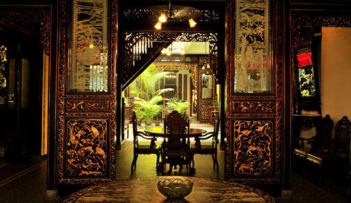

Malacca oozes with history and culture, with a celebrated title as one of the most historically important states in Malaysia. Malacca’s 15th-century Sultanate led to the modern Malay identity, accepting three eras of colonial influence (Portuguese, Dutch and British influence) that spanned almost five centuries. Today, UNESCO-listed Malacca City bursts with centuries-old structures, including St Paul’s—Malaysia’s oldest church. It also has a thriving food scene: Many people come here solely to eat their way through Jonker Street and stuff their faces with mountains of Peranakan cuisine.
PULAU BESAR
Big Island is an island in Malacca, Malaysia, and is located approximately 13 km from mainland Malacca.
Melaka River Cruise
Address: Jalan Persisiran Bunga Raya, Kampung Bunga Paya Pantai, 75100 Melaka
St. John Fort
The St. John's Fort is a historical fort in Melaka City, Melaka, Malaysia.
Address: Jalan Ujong Pasir, 75000 Melaka

Baba Nyonya Heritage Museum
PThe Baba & Nyonya House Museum, also known as the Baba Nyonya Heritage Museum, is a museum in Melaka City, Melaka, Malaysia. It showcases the local history of ethnic Chinese-Malays called Baba-Nyonya or Peranakan in Melaka.
Address: 48-50, Jalan Tun Tan Cheng Lock, 75200 Melaka
A Famosa
A Famosa is a former Portuguese fortress located in Malacca, Malaysia. It is among the oldest surviving European architectural remains in Southeast Asia and the Far East. The Porta de Santiago, a small gate house, is the only part of the fortress which still remains today.
Address: Address: Jalan Parameswara, Bandar Hilir, 78000 Alor Gajah, Melaka